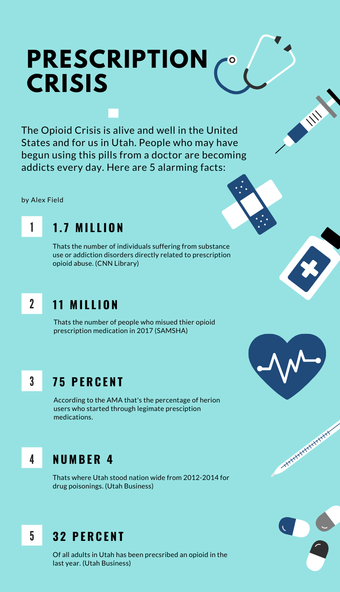
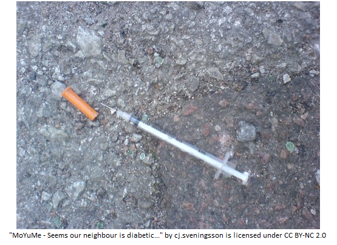

Alex Field's Portfolio
English 2010
A relfection on the opioid crisis
Dear Reader,
This semester I have learned quite a bit about writing in different genres. Below you will find my the pieces I have developed throughout the class. This process started for me with the prompt of looking at a local non profit organization and how they work in the community. I chose a program called Fit to Recover, one that I had become familiar with since moving to Utah. It’s purpose is to help provide a safe space for people in recovery. This was the jumping off point for me find a subject to address. I felt that addressing the opioid epidemic, both nationwide and here in Utah, was something that I feel strongly about and would like to know even more about. The first way I tackled the issue was in my academic report. This was a genre of writing I was most familiar with. The three additional pieces I was much less familiar with. This changed my ideas of how my work and my writing can be created. I was familiar with reading these genres, but had never personally produced a piece myself. It was a fun challenge for me to learn how to explore the rhetoric in those pieces, rather than the primarily logic driven report. I liked not being so boxed in to a structure.
Additionally, I would like to think that the work I produced is relevant to civic discussions both locally and nationally. I would like to think that people in both spheres could be influenced by any of the pieces I have made. Last, but not least, it was an exercise is my own web design and development skills. I am hosting this portfolio on my personal website and had the exciting challenge of making that work as well. I am a computer science major so this practice was useful for practicing those skills, as well as my writing. Below I will discuss some specifics about each assignment. I believe that they all appeal to kairos, as it’s hard to find anybody these days that isn’t personally effected by this issue.
My academic report is primarily an appeal to logic and credibility. It is intended for an academic audience, primarily for Utah state citizens. My research process started and ended with primarily academic journals as sources. I wanted to use credible journals with solid data to represent my research. The bulk of my revision process was going back and contextualizing the cited research in my paper, in an effort to make sure that it flowed neatly and coherently.
My final infographic is a ground up redo from my original draft. I think I initially misunderstood the genre so that was a part of my own learning curve. The audience for this piece is for anyone in Utah, a casual internet browsing audience. I went with a listical style image with shocking data points to appeal to emotion. However, the data is sourced from my academic report, so it is supported by ethos and logos.
My position paper is one founded strongly in pathos. It is backed up by solid data but I intended it to be more provocative and biased than my report. It is intended for a local audience, one that probably is already reading more progressive sources like the Salt Lake Tribune. My research wasn’t as much from academic journals but more from news journalism style pierces. My revision primarily was clearing up the move I make towards the “solution” to my problem that I present.
My photo essay is also a piece designed to appeal to the emotions of the reader/viewer. This was a practice in looking through some of the Creative Commons open source imagery and paring it with some of the research from my position piece. It’s audience is similar to the ones above, someone probably local, prone to progressive journalism, and with a certain level of technological proficiency who is browsing news and articles online rather than on physical media. The revisions here were different than the rest because they were in design elements and challenging my own web skills.
Report
Relection on Report
This paper was probably the genre I am most familiar with, and also most comfortable with using logic for presenting a topic. It's a very structured way of producing a paper that has been drilled in me my whole life. As revisions go, I tried to add context to my citations to make them flow better. As well as following the feedback given on linking my intro better to one of my last points, as well as working on the flow between paragraphs.
Infographic
Relection on Infographic
This revision of my infographic actually is actually totally new. I discared my old one entirely, it did not fit the criteria of the assignment and frankly I didn't like the direction it was headed. I used one of the free tools recommended and developed this one with more fitting data from my report essay. I think that this version I created is visually more pleasing, has a better attention grabbing title, and fits nicely with the genre. I think "listicals" or the listing off of a number of facts ("YOU WONT BELEIVE #5") can be a little annoying but I think used in the right way it can accurately get a point through. I am happy with what I made and I think now it fits cohesively with my previous work.
Position Paper
Heroin Should be Legal
Alex Field
What if I told you that there is a problem in the US, and its killing six times as many people since 1999? This is a subject that is close to home for me. For seven years before I started going back to school, I worked in drug and alcohol treatment centers. From my experience, most of my patients were under 25, and almost all patients, of all ages, were addicted to heroin. Nearly all the patients that I saw over those seven years began their journey on prescription opioids, many for a legitimate and legal reason. Once these people turned to heroin, they were lost from the system and driven underground. Now instead of interacting with doctors for help, their best chance was with law enforcement. And many of those interactions were about punishment rather than help.
Heroin overdose is a growing health risk in the US. According to Steven Reinberg in a 2017 article from WebMD, “Opioid overdose kills about 78 people a day in the United States. In 2015, more than 33,000 died of opioid overdoses, which was a record high, according to the U.S. Centers for Disease Control and Prevention.” Year after year new records are hit in this area. Given that this is a six-fold increase in deaths, that means back in 1999, fewer than 6,000 people died a year from overdoes. It begs the question, how are so many more people on heroin now than 20 years ago?
Correspondingly, abuse of prescription opioids has led to the heroin crisis. Over the years the amount of people prescribed to opioids has increased. From 1999 to 2011, consumption of hydrocodone more than doubled and consumption of oxycodone increased by nearly 500%. Once people are addicted to these drugs, they then search out ways to be them illegally. Maybe they need more than their prescription covers, or their doctors have cut them off. The next step in this process is to find heroin, the much cheaper alternative. This leads down the path of reason like: ‘Why am I paying $1 per milligram for oxy when for a tenth of the price I can get an equivalent dose of heroin?’
 One of the biggest concerns with heroin, besides its addictive and harmful potential, is this means by which it is used, intravenously. This means that the user injects the drug directly into their vein, bringing along a whole host of possible communicable diseases and new injuries. This unsafe usage becomes a huge public health risk. People who use needles to inject drugs are at the highest risk for acquiring Hepatitis C. For every one person who is injecting drugs and has been infected with Hep C, they are likely to infect 20 other people. These are staggering numbers, and besides the way an overdose death can affect a community, we can see other ways that this is also a public health concern.
A radical solution to these issues may be a tough pill to swallow, legalize or at the very least, decriminalize the use of heroin. We have seen the snowball effect of what an decade of people over using opioid medication, turned to heroin users, has done to our communities, now we need to make steps in a direction to do something about it. Rather than drive these people underground, for fear of being arrested and stigmatized by the community, I believe that it is time to work for new solutions towards helping these people. Ideas like this have been tested in other countries, from full legalization of drugs, to decriminalizing small amounts and making safe needle exchanges. In 2001 the European country of Portugal decriminalized possesion and consumption of all illict drugs. In an article from April 2017, NPR reported that Portugal’s heroin cases have seen a “…75 percent drop from the 1990s. Portugal's drug-induced death rate has plummeted to five times lower than the European Union average.” Providing users safe spaces can give them resources for treatment, as well as slowing the spread of disease and incidence of fatal overdose.
Community services like Insite have been providing these safe spaces. In a report by the Seattle Times in May 2017, “Statistics show Insite has saved lives, proponents say, reversing nearly 5,000 overdoses since 2003, with no deaths. At the same time, studies show the center has prevented the spread of diseases such as HIV and hepatitis C, and reduced dangerous litter including needles strewn on local streets.” Given the amount of deaths, and how likely the spread of disease is, new paradigms on helping and accessing these people, through our laws and public policies may be our only hope.
Conversely, there are arguments on the other side of this that say these drugs are dangerous and killing people, they shouldn’t be legal. But as we can clearly see, legal drugs like prescription opioids are already killing people, or at least at the root cause of why people are eventually dying from these drugs. Of course, drugs are dangerous, but that isn’t stopping millions of people every year from getting their hands on some type of them. There are also arguments of moral failings on the part of the users, but I think this is simply not a sympathetic approach. The most compelling arguments I found to the contrary were from a Vox article by German Lopez. To summarize his position, would be to say that the government’s handling and regulation of industries like alcohol and tobacco has been so poorly handled, that there would be no way that our lawmakers could reasonable deal with laws and regulations around hard drugs. For example, the legal and regulated drug of tobacco kills at least a half a million people annually. While I think this is an understandable position, I think that we are seeing the opioid trend become more dangerous in a smaller time frame, and also we are dealing with a much more advanced medical community, not the one that was practically promoting smoking in the early 1900s.
Whether you are for or against decriminalizing or legalizing heroin, you must admit that our country is in a grave state when it comes to the opioid crisis. If I can convince you of one that last thing, its at the end of the day, opioid users are humans. They are our mothers, fathers, brothers, and sisters. They deserve the help and respect that all humans do. Would you rather have your family member behind bars or being exposed to safe and alternative treatments?
Reflection on Position Paper
This project was fun for me because I do feel personally connected to it. I also like to argue positions. This one for example I am not sure I even 100% agree with, but I think its fun to try and find something controversial and even something I don't have to agree with to see if I could argue it effectively. Again this project is a continuing practice of my own web skills which adds and extra layer that makes it fun for me to work on. I think I really liked taking things I had already learned from the report paper and using those things as arguments. I've liked doing the papers on similar subjects to explore how the different genre conventions work.
Photo Essay
Pop out link to Photo Essay
Reflection on Photo Essay
I liked working on the photo essay. Again this was a test of my own webdev skills and also my knowledge on the subject. My biggest regret of this subject was not going to get some of my own photos for this. I am sure there are some public services committed to harm reduction down town and around the homeless shelter where I could have capture some powerful imagery of my own. I liked how this project is also a nice compliment to my positon paper and also is a nice follow up to the rest of the work I have done this semester.